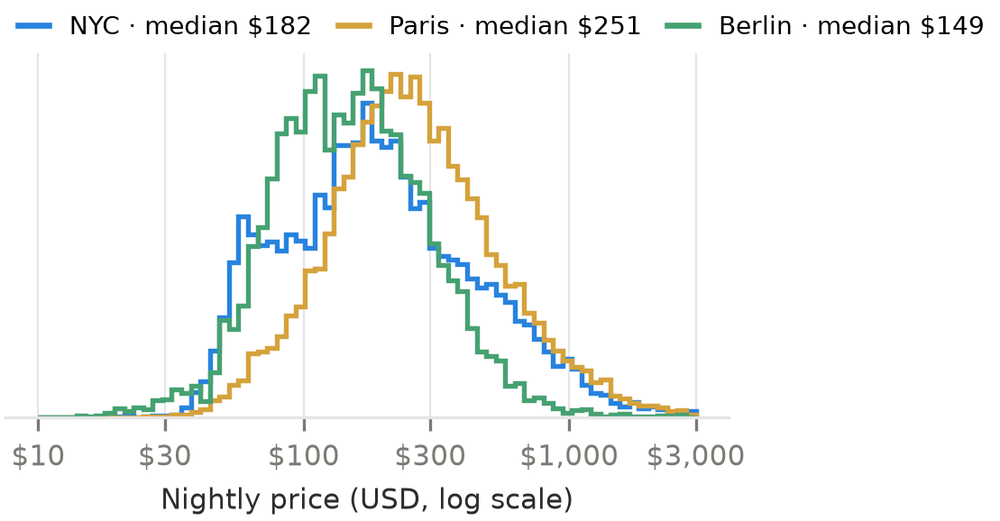
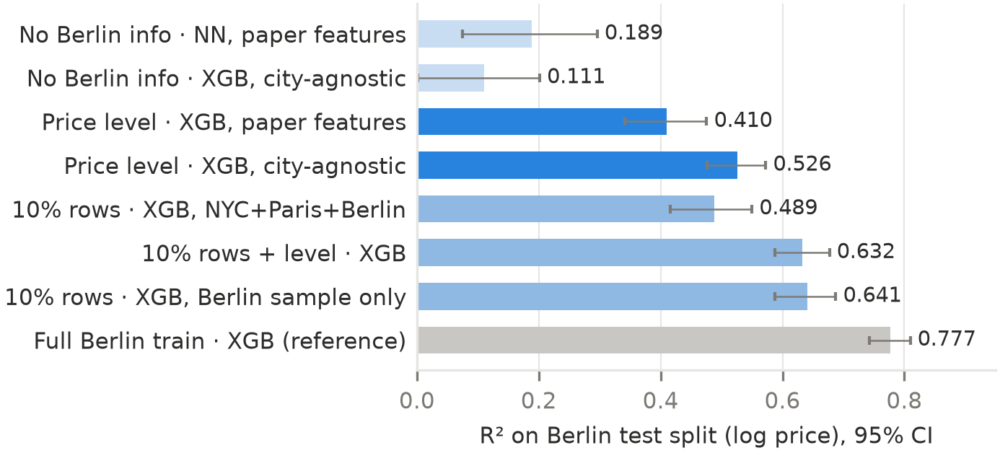

A new Airbnb host has to choose a nightly price, and a platform entering a new market has no price history to learn from. We study two questions. (i) How well can the nightly price of a listing be predicted from its attributes in New York City, Paris and Berlin? (ii) Can a model trained on other cities predict Berlin prices without local labels? We re-implement Luo, Zhou & Zhou (Stanford CS229, 2019) end to end on fresh 2026 data, check whether their findings still hold, and propose an extension for question (ii).
Inside Airbnb detailed listings files (CC BY 4.0), 90 columns per listing, September 2026 snapshots. We keep listings with a price between $10 and $10,000; about 40% of raw rows lack a usable price and are excluded (not necessarily inactive). Paris and Berlin prices are converted from EUR at 1 EUR = 1.15 USD. Each city is split 70 / 20 / 10 into train / validation / test (seed 42), as in the paper.
| City | Snapshot | Raw rows | Used | Median |
|---|---|---|---|---|
| New York City | 14 Sep 2026 | 29,918 | 19,396 | $182 |
| Paris | 16 Sep 2026 | 77,149 | 43,495 | $251 |
| Berlin | 19 Sep 2026 | 12,376 | 8,156 | $149 |

Schema changes since 2019. Cleaning fee, security deposit and 9 of the paper's 12 text fields no longer exist, so we use 3 text fields (title, description, host bio). The new price_quote_* and estimated_revenue_l365d columns are computed from the price, so we exclude them to avoid label leakage.
Features (all fitted on the training split only):
Labels: raw price, TH (only prices ≤ $1000; the paper used $500 when prices were half as high), square root and log. Models: ridge regression and KNN (baselines), random forest, XGBoost with early stopping on the validation split, and the paper's neural network (2 hidden layers of 64/32 ReLU units, SGD with Nesterov momentum 0.9, learning rate 0.005, L2 0.005, batch 64, early stopping). Metrics: R² and MSE on the label scale, as in the paper, plus MAE in dollars so that label transforms can be compared.
Transfer. Train on NYC, Paris or both and test on Berlin (Tables 7–8 in the repo). Robustness. Table 9 repeats the main model with a host-grouped split, so no host has listings in both train and test.
Python 3 with scikit-learn 1.9, XGBoost 3.4 and Streamlit. In src/: config.py holds every constant; data.py loads, cleans and splits; features.py builds the C/I/O/T/D groups as one ColumnTransformer (custom transformers for correlation pruning and amenities); models.py creates the five models; evaluate.py handles labels and metrics. experiments.py regenerates all 9 tables, the figures and results/RESULTS.md in one command (about 15 minutes on a 2-core CPU). train_final.py saves each fitted preprocessor and model as one .joblib bundle, used by predict.py (CLI) and app.py (Streamlit demo). The demo shows a nightly estimate and a residual-based band. For Berlin, its NYC + Paris transfer band is flagged as under-covered (61.4% observed coverage vs. 80% nominal). A fixed seed, pinned requirements and 18 pytest tests, including loading the saved models, keep the results reproducible.
| Test R² · in-city | NYC | Paris | Berlin |
|---|---|---|---|
| Ridge / KNN · C, TH | .466 / .659 | ||
| NN / Random forest · C, TH | .712 / .778 | ||
| XGBoost · C, TH | .787 | ||
| XGBoost · C, raw → log | .654 → .865 | ||
| XGBoost · C+O+T, log | .888 | .818 | .763 |
| XGBoost · same, host-grouped split | .847 | .779 | .752 |
| Paper, XGBoost · C+O+T, log | .740 | .704 | – |
| NN · C+O, log | .835 | .774 | |
| Paper, NN · C+O, log | .741 | .716 | – |
MAE of the best models: NYC $72, Paris $99, Berlin $48. Hosts with several near-identical listings make the random split optimistic (host-grouped row). NN on NYC + Paris: .804 pooled (paper .773); per city .841 / .773 vs .835 / .774 for single-city NNs.
| Test R² · all of Berlin, unseen | Ours | MAE | Paper |
|---|---|---|---|
| NN trained on NYC only | −44,916 | n/a | −3.5 |
| NN trained on Paris only | −36,389 | n/a | −17.4 |
| NN trained on NYC + Paris | .237 | $106 | .514 |
n/a: the predictions overflow, so dollar errors are meaningless. Our extension is evaluated on Berlin's test split (Figure 2).

Why single-city models collapse. Features are standardised with the training city's statistics: Berlin's latitude (52.5°) is about 200 sd from NYC's (40.7°, sd ≈ 0.06°), and a ReLU network extrapolates linearly, so its predictions explode. NYC + Paris widens that range, which is largely why combined training appears to "generalise" (0.237; paper 0.514). City-agnostic features alone do not help (NN 0.189 → 0.171, XGB 0.111): the main error is a price-level bias. Calibrating with Berlin's mean log price from the 10% sample lifts XGB to 0.526 (paper features + level: 0.410, separate CIs do not overlap; not a paired test), similar to training on the sample's rows (0.489). XGB trained on that sample alone gets 0.641, so with 571 local labels transfer no longer pays off. NYC alone still fails (−0.41).
Contributions. Bharat V Bhat: data pipeline and features (cleaning, label transforms, text and amenity encoding, correlation pruning), EDA, ridge/KNN baselines, Tables 2–4, tests. Bharath Hegde: random forest, XGBoost and NN, cross-city and transfer experiments (Tables 1, 5–9), the calibration extension, saved models and the Streamlit demo. Both wrote the report and slides.
pip install -r requirements.txt → python -m pytest -q → python -m src.experiments (all tables and figures) → python -m src.train_final → streamlit run app.py. The data and trained models are included, so the demo runs without retraining.